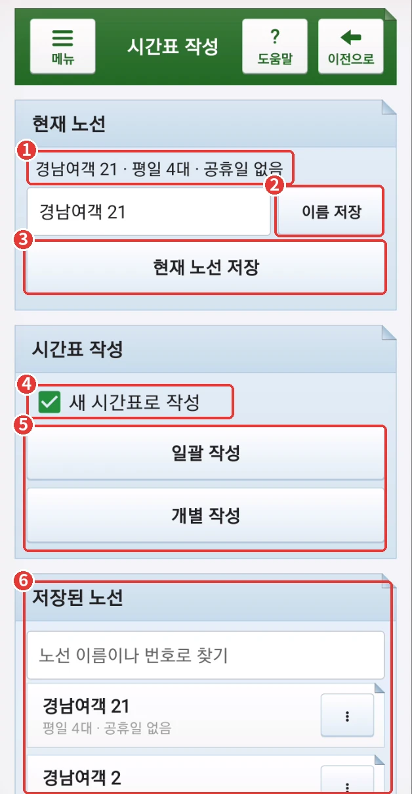
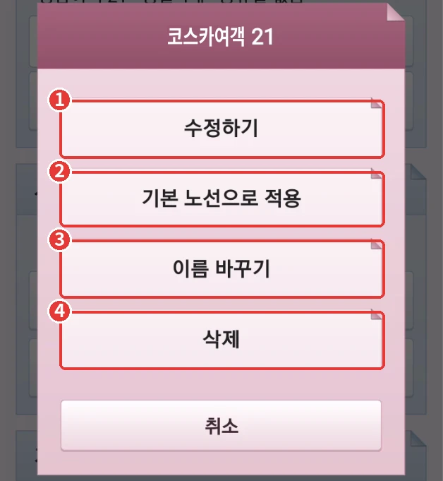
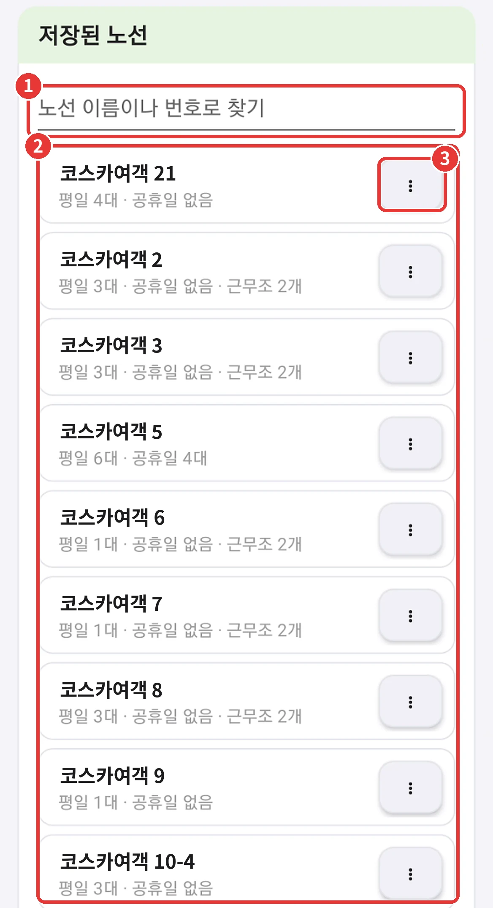
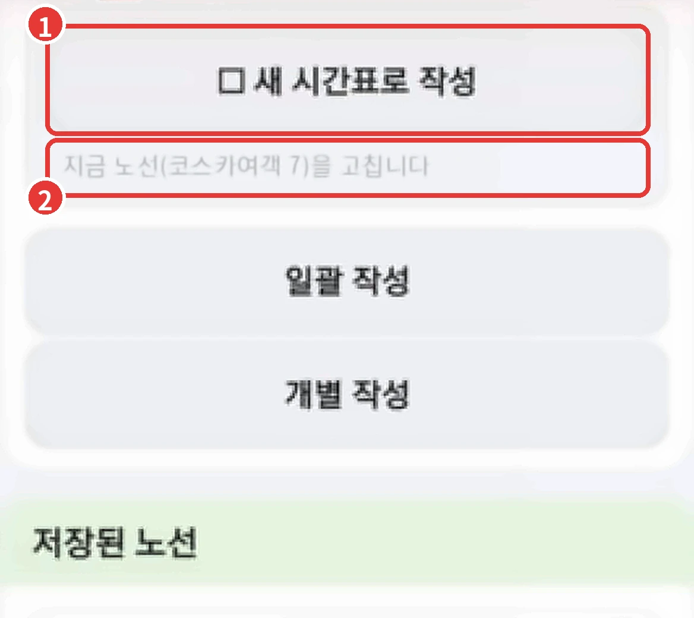
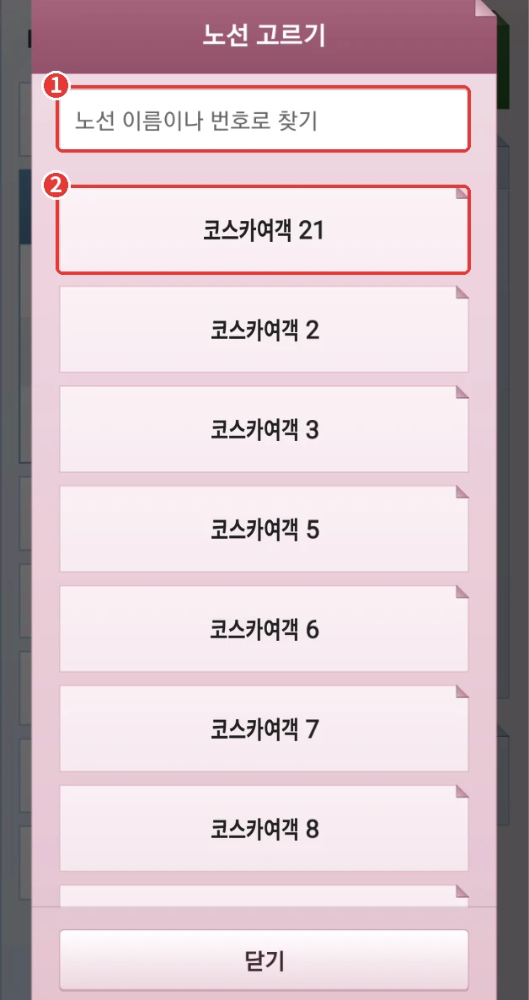
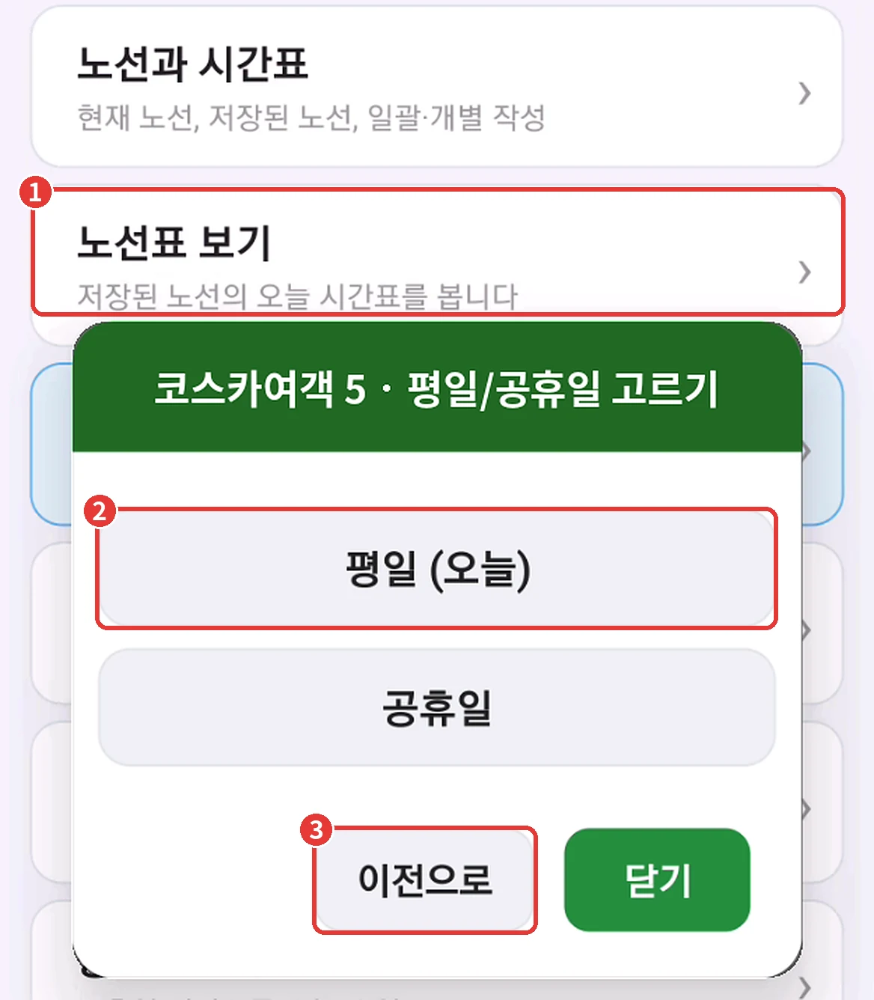
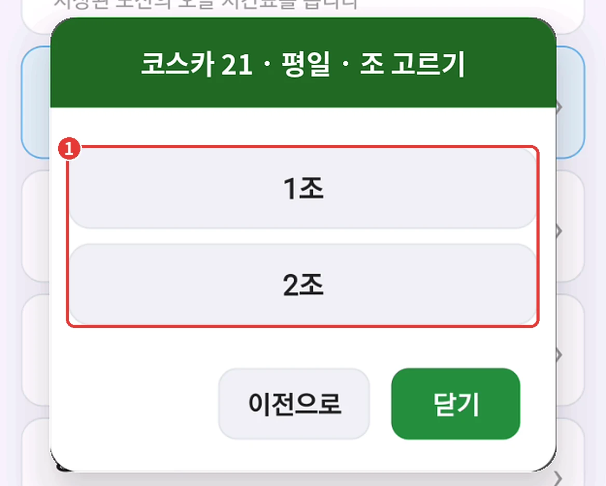
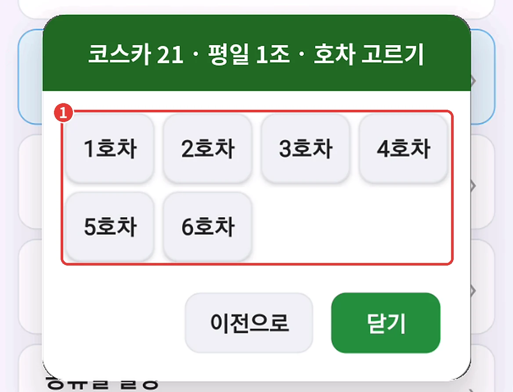
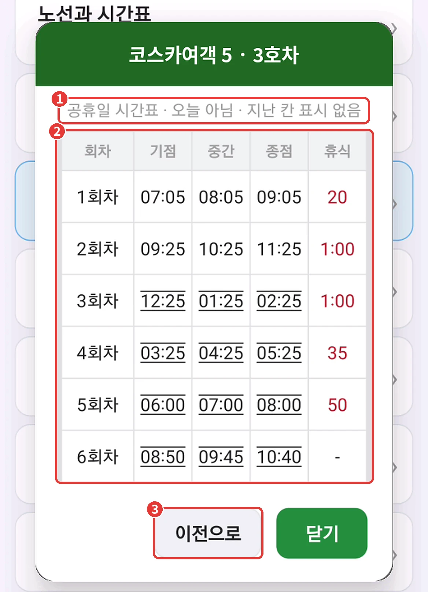

① 지금 기본으로 쓰는 노선 이름입니다.
② 이름을 고친 뒤 이름 저장을 누르면 바뀝니다.
③ 현재 노선 저장 : 지금 노선을 저장된 노선에 넣어 둡니다.
④ 새 시간표로 작성 : 켜면 새 시간표를 만들고, 끄면 지금 노선의 시간표를 고칩니다.
⑤ 일괄 작성(글로 한꺼번에) · 개별 작성(한 칸씩) : 시간표를 넣는 두 가지 방법입니다.
⑥ 저장된 노선 : 담아 둔 노선 목록입니다. 오른쪽 점 세 개 단추로 고릅니다.

① 수정하기 : 그 노선의 시간표 글을 시간표 일괄 작성 화면에 띄웁니다. 기본 노선은 바뀌지 않고, 복사해서 보내거나 고쳐서 저장할 수 있습니다.
② 기본 노선으로 적용 : 이 노선을 지금 쓰는 노선으로 바꿉니다. 바꾸기 전 상태는 저절로 백업됩니다.
③ 이름 바꾸기 : 저장된 노선의 이름만 바꿉니다.
④ 삭제 : 저장된 노선에서 지웁니다. 지금 쓰는 노선은 그대로입니다.

① 검색 칸 : 노선 이름이나 번호를 치면 그 글자가 들어간 노선만 남습니다. 빈칸과 '번' 글자는 빼고 찾으므로 '94 2'로 '94번 2대'를 찾을 수 있습니다.
② 기본 노선이 맨 위, 나머지는 가나다 순입니다. 회사 이름이 같으면 번호를 2, 3, 10-4처럼 수의 크기 순으로 놓습니다.
③ 점 세 개 단추로 그 노선에서 할 일을 고릅니다.

① 체크를 끄면 네모가 비고,
② 지금 노선을 고친다는 안내가 나옵니다. 이때 일괄 작성 · 개별 작성은 지금 노선 시간표를 고칩니다.

① 메뉴 → 노선·시간표 → 다른 노선표 보기를 누르면 이 창이 뜹니다. 검색 칸에 이름이나 번호를 치면 그 글자가 들어간 노선만 남습니다.
② 볼 노선을 누릅니다.

① 메뉴 → 노선·시간표 → 다른 노선표 보기를 누르고 저장된 노선을 고릅니다.
② 그 노선에 평일과 공휴일 시간표가 둘 다 있으면 어느 쪽을 볼지 고릅니다. 오늘에 해당하는 쪽에 (오늘)이 붙습니다.
③ 이전으로 : 앞 단계로 돌아갑니다.

① 근무조가 둘 이상인 노선만 이 창이 뜹니다. 볼 조를 고릅니다.

① 볼 호차를 누릅니다.

① 고른 날짜와 시간표 종류가 나오고, 보기만 한다고 알려 줍니다. 오늘 시간표면 지난 칸이 흐려지고, 오늘이 아닌 쪽 시간표는 흐리게 하지 않습니다.
② 고른 호차의 시간표입니다. 보기만 하므로 알람이 걸리지 않고 기본 노선도 바뀌지 않습니다.
③ 이전으로 : 호차 고르기로 돌아갑니다.